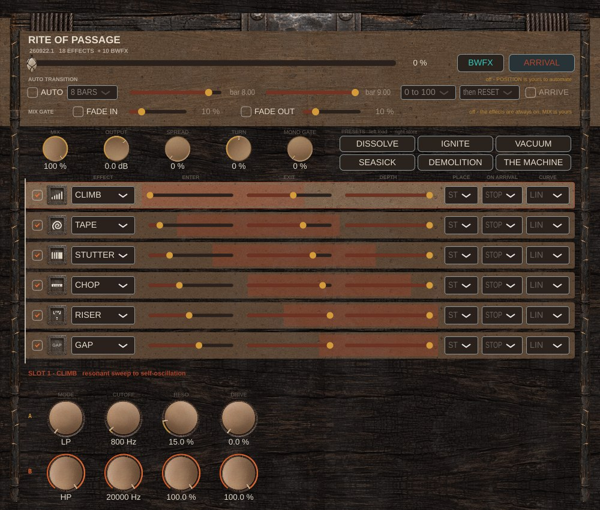
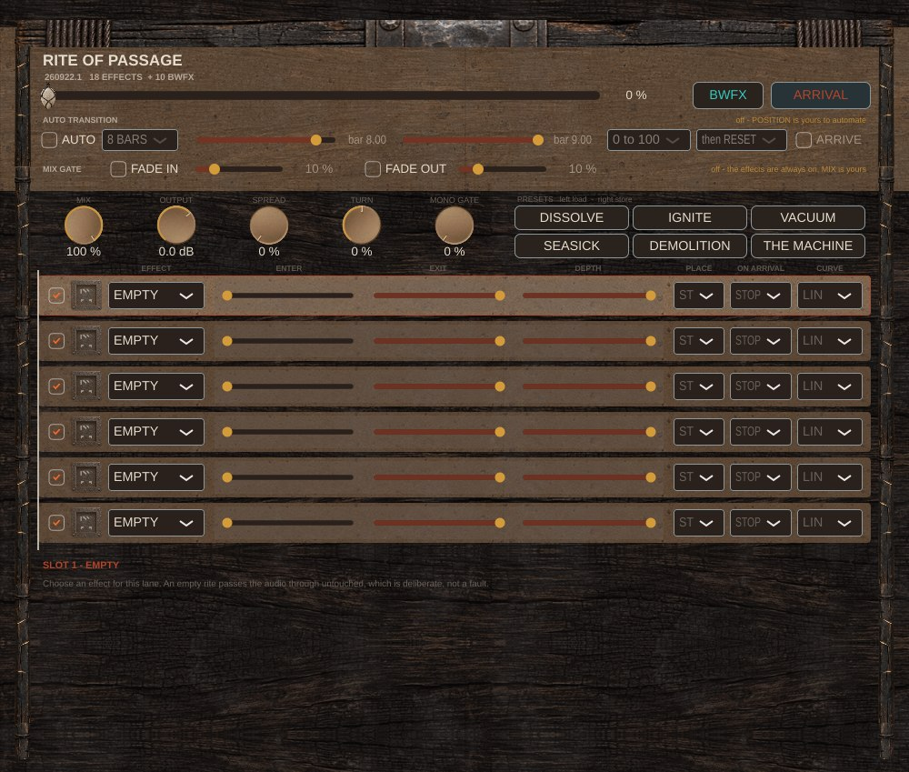
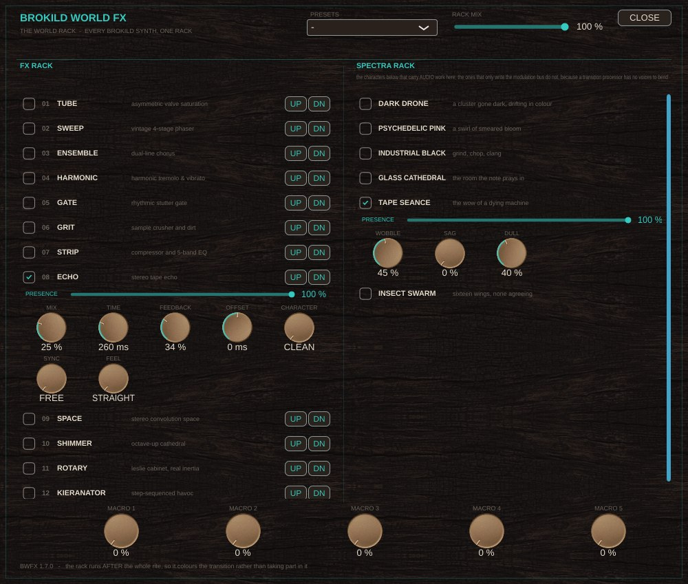
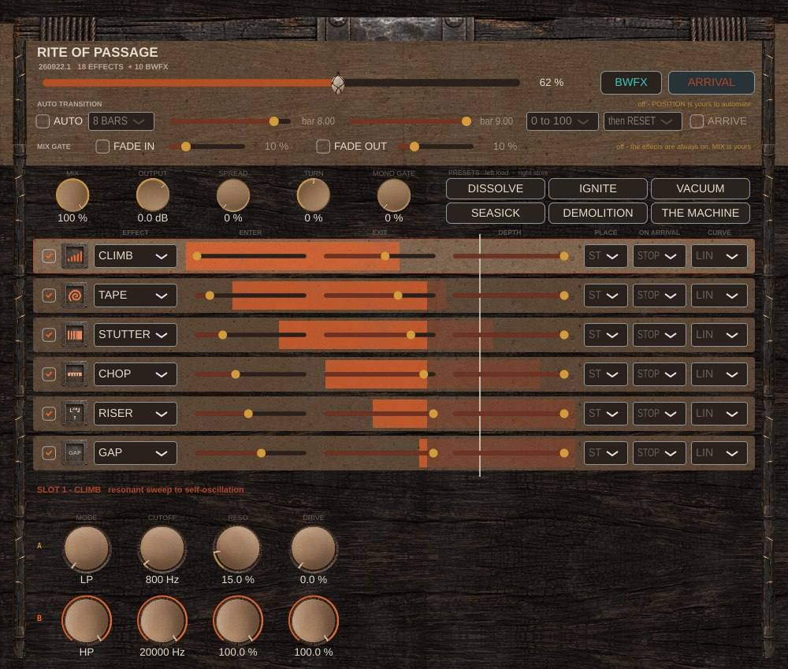
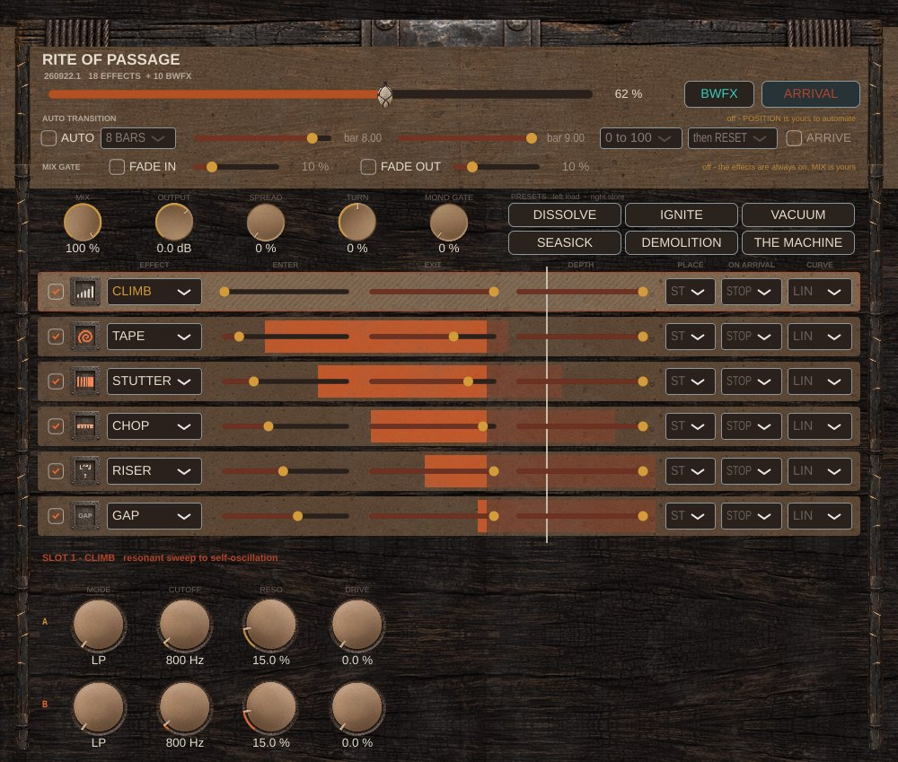

Brokild · Windows VST3 · Transition processor
Handbook
BUILD 260919.2
A transition is not an effect. It is a journey with a landing. One slider carries the music, six slots travel along it on schedules you set, and the arrival is a separate command that lands on the bar, to the sample. September 2026.
What it is
An insert for the bar before a drop. Put it on a track or a bus, load up to six effects into six slots, and tell each slot where along one master slider it should travel from its A setting to its B setting. Then automate that one slider — POSITION — from 0 to 100 % over the build.
The slots ignite one after another as the slider passes their entry points. At the end you fire ARRIVAL, a separate command, and every slot lets go on the next bar line, to the sample, with a sub-bass impact under it.
Scrubbing the slider never fires the drop. Only ARRIVAL does, which is why you can drag POSITION about while you work without the track detonating.
in → slot 1 → slot 2 → … → slot 6
→ stereo stage (SPREAD / TURN / MONO GATE)
→ MIX → OUTPUT → BWFX rack → out
Slots are in series, top to bottom. Slot order is chain order.
Read this first
A slot you have just filled cannot move, and that is deliberate. Choosing an effect seeds both sides of the slot — A and B — with that effect's own defaults. A equals B, so the slot resolves to the same value at every position, and ENTER, EXIT, DEPTH and CURVE all do nothing until you change something in the B row.
This is on purpose: loading an effect never changes your sound until you ask it to. You can fill all six lanes and hear nothing different, then decide what travels.
A slot that cannot travel has its span hatched out on the lane, its name in amber instead of ash, and a line under the A/B editor telling you to move a B knob. A lane is 44 mm of panel with a slider on every pixel, so it has to say it without words.
So the first move after choosing an effect is always the same: click the lane, then change a knob in the bottom row.

Click a lane to select it. The editor below shows that slot's parameters: top row A in yellow, bottom row B in ember. A parameter whose A equals its B does not move, however far the marker travels.
Each slot
| tick box | slot on or off | DEPTH | how far along the A→B route it actually gets by EXIT. 60 % means it is still on its way when the drop lands, which is often the better sound |
| socket | the effect's own mark, struck into iron. It warms to ember as the lane catches | PLACE | ST / MID / SIDE / L / R — which part of the stereo field the slot works on |
| EFFECT | which effect the slot holds. EMPTY is none, duplicates are allowed, and BROKILD WORLD FX at the bottom opens a submenu of ten rack modules. Amber means the slot cannot travel | ON ARRIVAL | STOP kills it dead · SPILL stops feeding it but lets the tail ring on over the downbeat · CLEAR silences it and zeroes its buffers, the vacuum |
| ENTER | the POSITION at which this slot starts moving from A toward B | CURVE | LIN · ACCEL, late then a rush · DECEL, fast then settling · S · PEAK, which reaches B in the middle and returns to A |
| EXIT | the POSITION at which it reaches B. Before ENTER it sits at A; after EXIT it holds at B |
Only these are automatable. Everything else lives in the plug-in state — the rite — on purpose, so re-assigning a slot never orphans an automation lane.
| POSITION | 0–100 %. The master slider. Automate this |
| ARRIVAL | a trigger. On its rising edge it arms and fires at the next bar. Set it back to off before the next build |
| MIX | global dry/wet across the chain |
| OUTPUT | −24 to +12 dB trim |
| SPREAD | left and right run the score slightly apart: width without panning |
| TURN | rotates the field up to ±45°, energy preserving |
| MONO GATE | how far toward mono the mix collapses over the last 15 % of the travel. ARRIVAL releases it |
| MACRO 1–5 | the World rack's five macros |
Auto transition
The strip under POSITION runs the sweep for you off the host transport, so you need not draw an automation lane at all.
| AUTO | while it is on, the plug-in owns POSITION and the host parameter is ignored. The slider is disabled and becomes a display |
| BARS | the cycle length: 1, 2, 4, 8 or 16 bars, repeating |
| START / END | where in the cycle the sweep runs. These are BAR LINES counted the way a DAW counts them, so in an 8-bar cycle the 8th bar is 8.00 to 9.00. They snap to quarter bars |
| 0 to 100 / 100 to 0 | which way it runs |
| then RESET / then HOLD | what happens between the end of the window and the end of the cycle |
| ARRIVE | fire ARRIVAL when the sweep completes. Off by default: an automatic drop is a bigger thing than an automatic sweep |
After the window the position drops straight back. Put the window early in a long cycle and then HOLD leaves you at 100 % for several bars, which reads exactly like the sweep having run once and stopped. HOLD is there for when you want the arrival to stay landed until the cycle comes round.
An 8-bar cycle, window on the 8th bar.
| transport at bar 4 | 0.00 |
| bar 8.0 | 0.00 |
| bar 8.5 | 0.50 |
| bar 9.0 | 0.99 |
With AUTO off nothing changes at all. The host parameter drives POSITION exactly as it always did, which is checked so that no existing project moves.
Mix gate
Most of the time you want the plug-in present during the transition and absent either side of it. The MIX GATE row does that without a second automation lane: it scales MIX by where POSITION is.
| FADE IN | shuts the effects off while POSITION is at 0 |
| its length | how much of the travel the fade takes. At 0 the switch is instant and the readout says so: silent at exactly 0 %, fully open one step above it. At 20 % it is half open at 10 % and finished by 20 % |
| FADE OUT | the same at the other end, measured back from 100 % |
There is no click risk at a zero-length gate: the rack already smooths MIX with a 10 ms one-pole.
With neither switch engaged, MIX is exactly the number on the knob. The bench checks that as an IEEE-exact multiply by one rather than a tolerance, so no existing project moves by a hair.
| 20 % fade in, at 10 % | 0.50 |
| … from 20 % on | 1.00 |
| 25 % fade out, at 87.5 % | 0.50 |
| … at 100 % | 0.00 |
| both on, at 0 / 50 / 100 % | 0.00 / 1.00 / 0.00 |
The eighteen
Each carries its own parameters, and every one of them has an A and a B.
| CLIMB | resonant filter sweep to self-oscillation — the spine of a build | MODE LP/BP/HP · CUTOFF · RESO · DRIVE |
| TAPE | analogue echo whose head moves: changing TIME bends the pitch, or crossfades | TIME · FEEDBACK · MOTOR · MODE · DRIVE · WOW · MIX |
| STUTTER | captures a slice and repeats it, so time stops | DIV · DEPTH · DECAY · PITCH · CAPTURE |
| CHOP | gates the live signal rhythmically, so time continues | RATE · DEPTH · DUTY · SLEW |
| RISER | a generator: noise, tone or a Shepard climb, mixed in | SOURCE · FREQ · RESO · LEVEL · WIDTH |
| GAP | the silence before the drop, placeable anywhere on the score | DEPTH · EDGE |
| GRAIN | the music breaks into particles, then a cloud | SIZE · DENSITY · SCATTER · SPREAD · MIX |
| BLOOM | a small room growing into an enormous wash; FREEZE at 100 % holds it for ever | SIZE · DECAY · DAMP · MOD · FREEZE · MIX |
| FREEZE | the harmonic fingerprint held while the rhythm dissolves | BLUR · HOLD · CAPTURE |
The eighteen
| REVERSE | each division played back to front over the next one | DIV · DEPTH · EDGE |
| BRAKE | the whole signal grinding to a halt, or launching out of one | SPEED 0–200 % |
| DIVE | the source itself bending into the drop | SEMIS −24…+12 · GRAIN |
| SWIRL | a room that will not hold still: chorused twenty times as deep as BLOOM's | SIZE · DECAY · WARP · RATE · TONE · MIX |
| MANGLE | four ways to break it. Travelling ENGINE walks warm, ugly, folded, destroyed | ENGINE · DRIVE · BIAS · CHAR · TONE · MIX |
| SWARM | one voice becomes a crowd: up to eight copies, each at its own offset | VOICES · DETUNE · DEPTH · RATE · SPREAD · MIX |
| DUST | older than the record: quantise, hold, wobble the transport, add the room | BITS · RATE · WOW · NOISE · TONE · MIX |
| ORBIT | round the head, and behind it. ANGLE is where on the circle the source sits | ANGLE · SPIN · WIDTH · REAR · SHADE · MIX |
| CHANT | the track is made to speak. What arrives is the modulator | CARRIER · PITCH · BANDS · FORMANT · RESPONSE · TONE · MIX |
Behind the head it is 3.3 dB quieter, 6.6 dB darker at the top and 24 samples late, because the path round a skull is longer than the path to the front of it. All three together sell the circle; a pan pot gives you only the first.
Above 100 % the playback head is trying to catch up with the present, and from rest there is nothing to catch up to. Brake first, then let it go: that is the gesture.
At 100 % the loop gain is exactly 1.0, the modulation stops and the delays round to whole samples, so a frozen wash neither creeps nor decays. The bench holds it flat over sixty seconds.
The World rack
The bottom of every EFFECT menu opens BROKILD WORLD FX: ten modules of the World rack, insertable in a slot like any of the eighteen and swept from A to B like any of the eighteen.
TUBE · SWEEP · ENSEMBLE · HARMONIC · GATE · GRIT · STRIP · ECHO · SHIMMER · ROTARY
The rack is already on this plug-in, post-chain, with its five macros automatable — so this is not about reaching those modules. It is about where they sit. A slot puts one inside the chain, with its own PLACE and its own ON ARRIVAL, and that buys three things the post-chain rack cannot.
| Order | a GRIT before CLIMB is a dirty filter; after it, a clean filter into dirt. Same two boxes, different instrument |
| Field | GATE set to SIDE rolls the room and leaves the lead alone |
| The landing | an ECHO set to SPILL rings on through the drop while everything around it is CLEARed |

Assigning one changes nothing until you edit it — each arrives with its one amount knob at zero, so A is dry and the first thing you reach for is B's amount. Eight of the ten are bit-exact at rest; TUBE's valve stage is in circuit at any drive, so that one colours the moment you assign it.
Two are deliberately not offered. SPACE rebuilds its reverb between blocks, so its character cannot travel. KIERANATOR is a drawn step pattern, and the grid that draws it is on the rack's face, not in a lane.
A first rite
| 1 | Insert it on the drum bus or the master. Nothing changes yet. |
| 2 | Lane 1: choose CLIMB. Click the lane. In the B row set CUTOFF to 300 Hz and RESO to 60 %. Until you do, the lane stays hatched. Leave ENTER at 0 and EXIT at 100 %. |
| 3 | Lane 2: CHOP. ENTER about 50 %, EXIT 95 %. A RATE 1/4, B RATE 1/16. CURVE = ACCEL, so the rate rushes at the end. |
| 4 | Lane 3: RISER. ENTER 30 %, EXIT 100 %. A LEVEL −60 dB, B LEVEL −6 dB, B FREQ 8000. SOURCE NOISE. |
| 5 | Lane 4: GAP. ENTER 92 %, EXIT 100 %. A DEPTH 0, B DEPTH 100. ON ARRIVAL = CLEAR. |
| 6 | Set MONO GATE to 60 %. |
| 7 | In the DAW draw a POSITION ramp 0→100 % over the last four bars. Draw an ARRIVAL blip that goes on just before the bar line of the drop, and back to off after. |

The filter closes across four bars, the chop starts halfway and accelerates, the riser rises from bar two, the mix narrows in the last 15 %, the gap cuts the last half-beat, and on the bar the chain lets go.
Two more worth trying once that works: DIVE on the last bar with B SEMIS at −12, the whole track bending into the drop; and BLOOM with B FREEZE at 100 % and ON ARRIVAL = SPILL, so the wash is caught and hangs over the downbeat.
What is verified
The score is obeyed, the loudness contract holds per effect, ARRIVAL is sample-accurate, rendering is identical at 64 and 256-sample blocks, and the six most expensive effects loaded at once cost about 10 % of one core.
BRAKE and DIVE read a delay line faster than it was written, which folds everything above the new Nyquist back into the band. Both run on a 2× oversampled line. A 14 kHz tone folds at −64.6 dB for DIVE at +12 semitones, where it was 0.0 dB before; −64.6 for BRAKE launching out of a stop; and −103.3 for GRAIN at full SPREAD.
Parameters, buses, state round trip, a rite from a newer build tolerated, scrubbing fires nothing, ARRIVAL fires, and a rite carrying World modules comes back as the same modules with the same knobs.
A travelling lane carries heat, a lane whose A equals its B carries none, and the lane menu is the eighteen with the ten World modules behind their own door, every one selectable.
Nobody has heard it in a DAW yet. Everything above is a machine reading numbers off real audio. None of it is the same as a person listening.
Still missing
Seven effects have no mark of their own. The glyph sheet carries eleven marks and the empty brackets; GAP falls back to its name in type. A World module in a lane has none either, and draws its name in the rack's teal instead.
The wordmark is not used. The delivered plank is shorter than its own lettering, so every letter is cut off at the bottom. The panel draws the title in type until that is redrawn.
Without a host clock the plug-in free-runs at 120 BPM, so ARRIVAL still lands on a bar of its own clock.

AGPLv3. Read it, change it, build it. If you distribute a modified build, publish your changes. The source is in the same repository as this handbook, under vst3-apps/rite-of-passage/plugin. The artwork is not licensed for reuse.
Brokild · September 2026